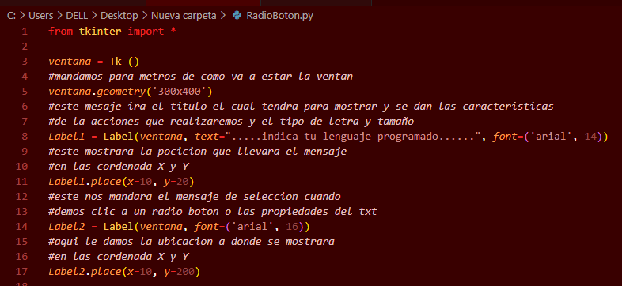

¿Qué es Tkinter?
Es una librería que proporciona a las aplicaciones de Python una interfaz de usuario fácil de programar. Además es un conjunto de herramientas GUI de Tcl/Tk (Tcl: Tool Command Language), proporcionando una amplia gama de usos, incluyendo aplicaciones web, de escritorio, redes, administración, pruebas y muchos más.
¿Porque utilizar Tkinter?
Tkinter no es solo la única librería para python especializada en la creación de interfaces gráficas, entre las más empleadas están wxPython, PyQt y PyGtk, todas con ventajas y desventajas. Entre los puntos fuertes que caracterizan a Tkinter en la creación de GUI, es que viene instalado con python en casi todas las plataformas, su sintaxis es clara, fácil de aprender y documentación completa.
Un lenguaje visual ha evolucionado a medida que la interfaz gráfica de usuario se ha convertido en algo común tanto en los sistemas operativos (SO) como en las aplicaciones de software. Incluso aquellos con pocos conocimientos de informática pueden ahora, a través del uso de GUI, aprenden a utilizar aplicaciones informáticas para procesamiento de textos, finanzas, inventario, diseño, ilustraciones o pasatiempos.
